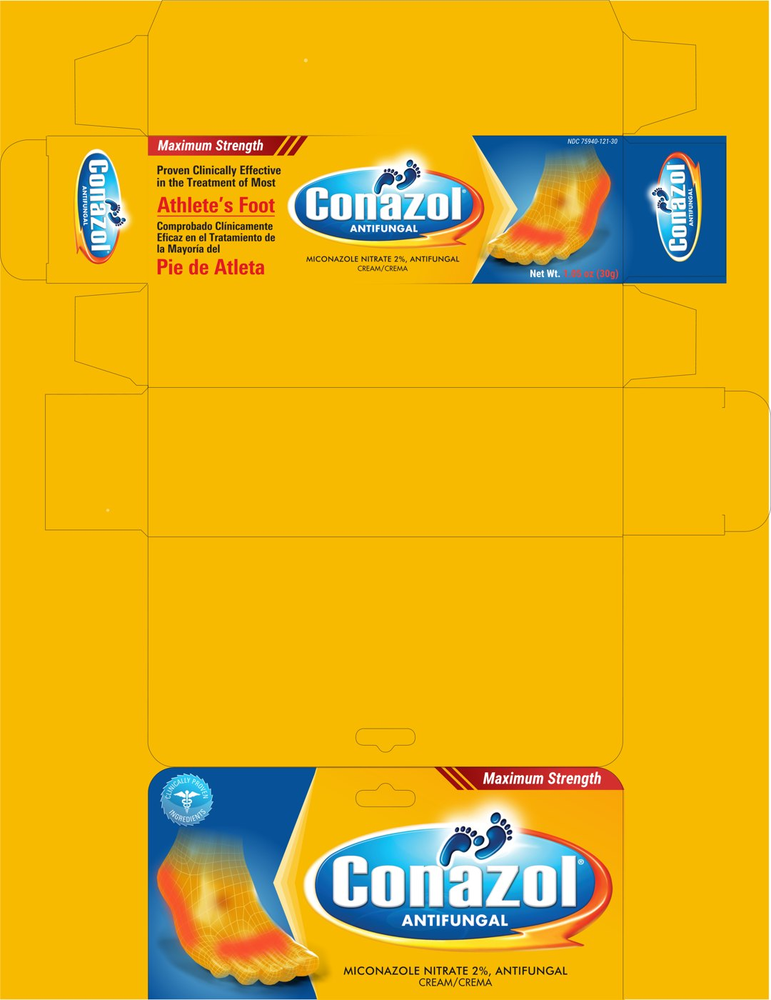
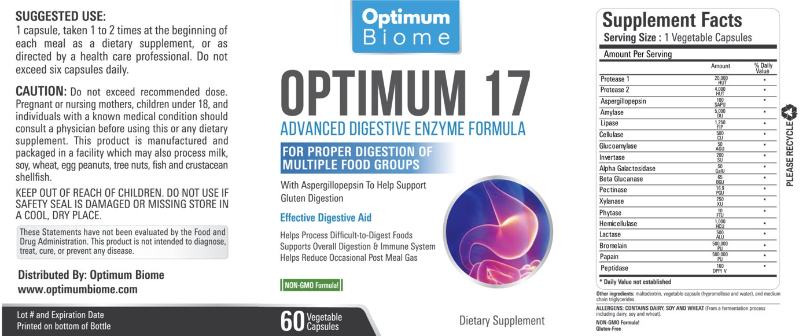
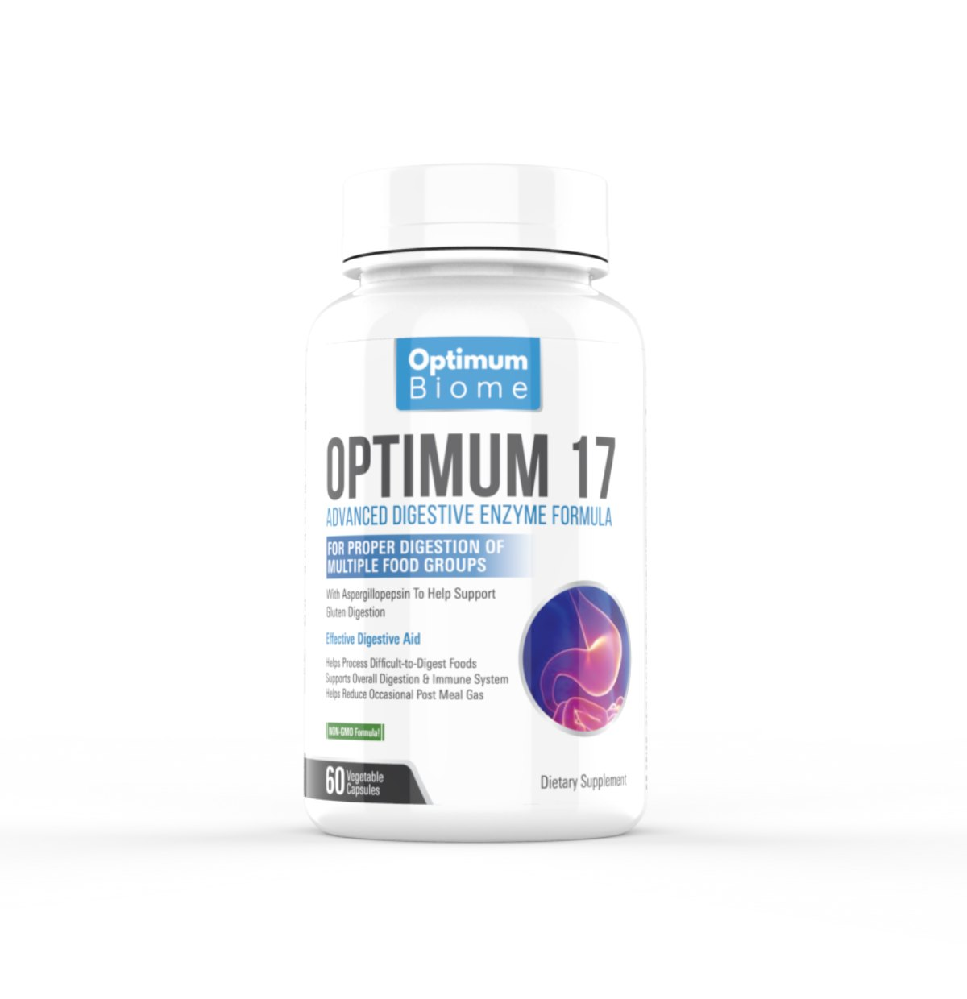
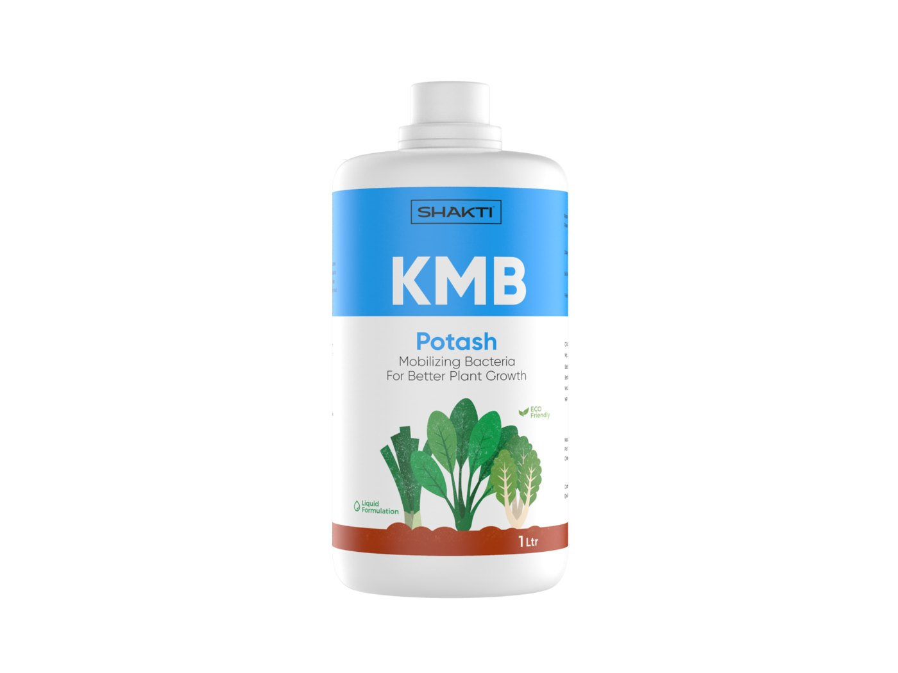
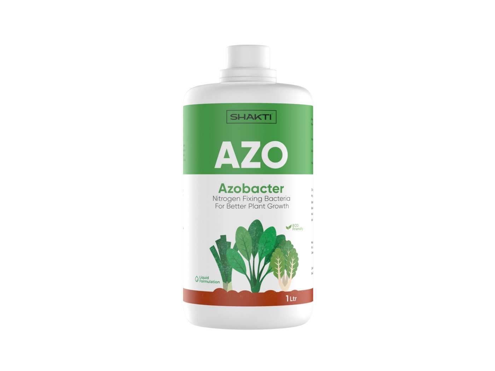

EVERY GREATPACK STARTSFLAT.

01 · Dieline
THEDIELINE.
Flat dieline
 Conazol · finished pack
Conazol · finished pack02 · Artwork
THEARTWORK.

Flat label artwork
Optimum 17 · on the bottle03 · 3D
THE LABEL,IN 3D.
Brand world · Shakti Agrobiotech
ONE BRAND.EVERY BOTTLE.

KMB PSB
PSB
AZOEVERY DETAIL,CONSIDERED.
How we work
Discover
Understand your business & goals
Plan
Strategy, structure & timeline
Build
Design, develop & launch
Grow
Measure, improve & scale
FROM DIELINETO SHELF.
bombaymarketing.in